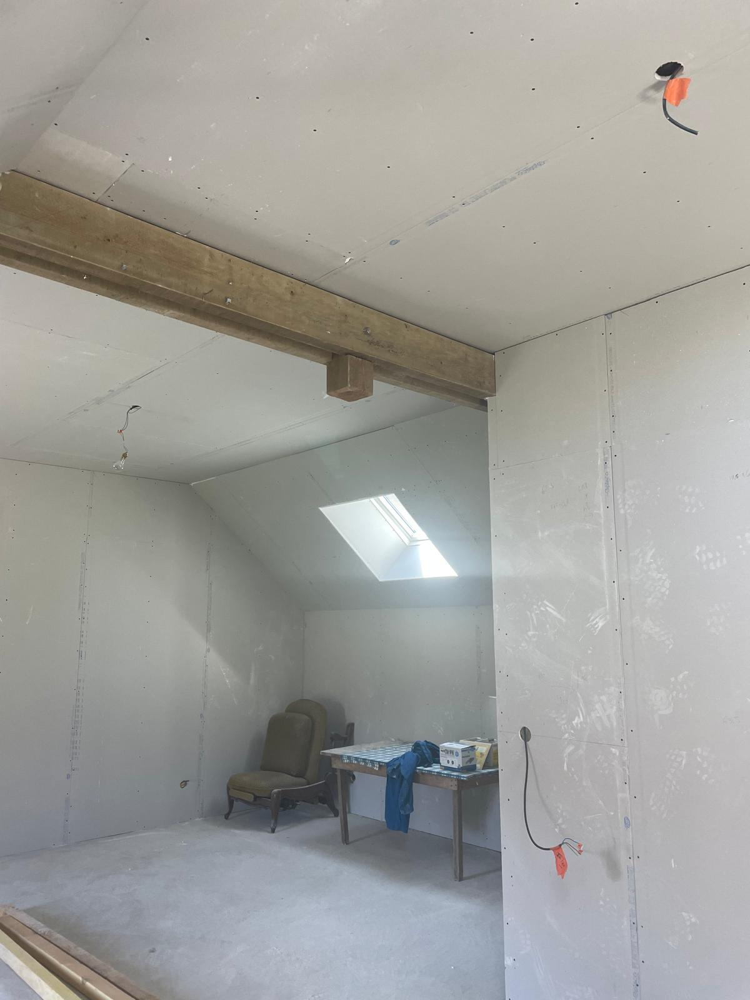

Vos travaux de plâtrerie et d'isolation à Bourges
Placo Isolation du Berry est une entreprise de plâtrerie et d'isolation installée à Vierzon. Bourges fait pleinement partie de notre zone d'intervention : nous nous y déplaçons gratuitement pour la visite et le devis, comme dans toute l'agglomération berruyère.
Nous y réalisons l'ensemble de nos prestations :
- Pose de placo : cloisons, doublages, plaques hydrofuges et phoniques, aménagements sur mesure.
- Isolation intérieure : murs, rampants, plafonds et planchers en laine minérale.
- Faux plafonds : plafonds suspendus, décrochés, spots et gorges lumineuses.
- Aménagement de combles : création de chambres, bureaux ou suites sous les toits.
- Rénovation intérieure : reprise de plâtrerie ancienne, enduits et préparation des supports avant peinture.
Du centre historique aux quartiers pavillonnaires
Bourges offre une grande variété de bâti, et chaque type de logement a ses contraintes :
- Maisons anciennes du centre : murs épais et rarement d'aplomb, planchers anciens, pièces hautes sous plafond. Les doublages sur ossature et les faux plafonds permettent de rattraper les défauts tout en isolant.
- Pavillons des communes voisines (Saint-Doulchard, Saint-Germain-du-Puy, Trouy, La Chapelle-Saint-Ursin) : isolation des combles et des rampants souvent insuffisante, combles à aménager pour gagner une chambre.
- Appartements : redistribution des pièces, cloisons phoniques entre chambres, habillage de gaines.
- Locaux professionnels : cloisonnement de bureaux, plafonds suspendus, coffrages.

Pourquoi faire appel à nous à Bourges
- 15 ans d'expérience dans le bâtiment et la rénovation : les bons réflexes techniques et le bon conseil dès la première visite.
- Un interlocuteur unique du premier rendez-vous au nettoyage final du chantier.
- Des finitions soignées : bandes et enduits réalisés avec soin, murs et plafonds livrés prêts à peindre.
- Des clients satisfaits : nos avis Google sont notés 5 étoiles.
- Un devis gratuit, détaillé et sans engagement.
Nous intervenons aussi à Mehun-sur-Yèvre, Saint-Florent-sur-Cher, Marmagne, Plaimpied-Givaudins, Fussy et Berry-Bouy. Consultez la liste complète de notre zone d'intervention.
Un projet à Bourges ou dans l'agglomération ?
Visite sur place et devis détaillé gratuits, sans engagement, dans un rayon de 50 km autour de Vierzon.